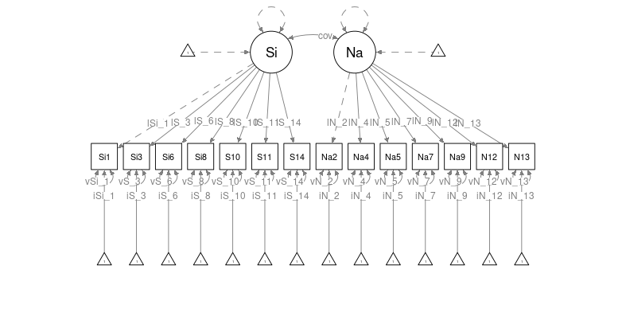

Moderated-Nonlinear-Factor-Analysis
Source:vignettes/Moderated-Nonlinear-Factor-Analysis.Rmd
Moderated-Nonlinear-Factor-Analysis.RmdModerated nonlinear factor analysis (MNLFA) has been proposed by Bauer (2017) to assess measurement invariance. The general idea is that parameters within the model (that is, loadings, regressions, intercepts, and (co-)variances) may differ across individuals. These differences are predicted using covariates such as age and gender. For instance, Kolbe et al. (2022) demonstrate MNLFA using the following model:

The loading lSi_1 may differ linearly by age and gender
(Kolbe et al., 2022). That is
lSi_1 = lSi0_1 + lSi1_1*Age + lSi2_1*Male. If
lSi1_1 or lSi2_1 are non-zero, this suggests
measurement non-invariance.
MNLFA is a powerful procedure, but specifying the models can be tedious. Kolbe et al. (2022) provide an in-depth introduction using OpenMx using the DS14 data set by Denollet et al. (2013) included in the mokken (“Mokken Scale Analysis in R,” 2007) package.
The script for the tutorial by Kolbe et al. (2022) can be found on osf at https://osf.io/527zr. The following pre-processing steps are taken directly from that script:
# code copied from Laura Kolbe, Terrence D. Jorgensen, Suzanne Jak, and Dylan Molenaar
# at https://osf.io/527zr
library(mokken)
#> Loading required package: poLCA
#> Loading required package: scatterplot3d
#> Loading required package: MASS
## Load data
data("DS14", package="mokken")
## Save as data frame
DS14 <- data.frame(DS14)
## Recode negatively worded items
DS14$Si1 <- 4 - DS14$Si1.
DS14$Si3 <- 4 - DS14$Si3.
## Standardize age
DS14$Age <- (DS14$Age - mean(DS14$Age))/sd(DS14$Age)
# mean-centering age is another option, but caused convergence difficulties with
# this dataset
## Change order of variables
DS14 <- DS14[,c("Male","Age","Si1","Si3","Si6","Si8","Si10","Si11","Si14",
"Na2","Na4","Na5","Na7","Na9","Na12", "Na13")]
## Check data
head(DS14)
#> Male Age Si1 Si3 Si6 Si8 Si10 Si11 Si14 Na2 Na4 Na5 Na7 Na9 Na12 Na13
#> 1 1 0.03136864 2 2 2 3 2 2 4 3 2 2 3 2 4 2
#> 2 1 -0.44266587 2 1 2 2 2 4 2 0 0 0 0 0 3 0
#> 3 1 -0.82189349 3 3 2 2 2 2 1 3 1 1 2 2 1 1
#> 4 1 -0.63227968 2 2 1 2 3 1 1 3 0 0 0 1 1 0
#> 5 1 0.03136864 2 3 2 3 3 2 3 2 2 2 3 2 3 1
#> 6 0 -0.06343826 0 0 0 0 0 0 0 3 1 2 1 2 4 2Model specification
We want to specify the configural model outlined in Kolbe et al. (2022). In this model, all
loadings, intercepts, variances and co-variances are predicted with the
covariates Age and Male. The only parameter
that is constant across all subjects are the latent variances of
Si and Na, which are fixed to 1 for
scaling.
For demonstrative purposes, we will first set up a confirmatory
factor analysis without the Age and Male
covariates. Using mxsem, the syntax could look as
follows:
cfa_syntax <- "
# loadings
Si =~ lSi_1*Si1 +
lSi_3*Si3 +
lSi_6*Si6 +
lSi_8*Si8 +
lSi_10*Si10 +
lSi_11*Si11 +
lSi_14*Si14
Na =~ lNa_2*Na2 +
lNa_4*Na4 +
lNa_5*Na5 +
lNa_7*Na7 +
lNa_9*Na9 +
lNa_12*Na12 +
lNa_13*Na13
# latent variances and covariances
Si ~~ 1*Si
Na ~~ 1*Na + cov*Si
# manifest variances
Si1 ~~ vSi_1*Si1
Si3 ~~ vSi_3*Si3
Si6 ~~ vSi_6*Si6
Si8 ~~ vSi_8*Si8
Si10 ~~ vSi_10*Si10
Si11 ~~ vSi_11*Si11
Si14 ~~ vSi_14*Si14
Na2 ~~ vNa_2*Na2
Na4 ~~ vNa_4*Na4
Na5 ~~ vNa_5*Na5
Na7 ~~ vNa_7*Na7
Na9 ~~ vNa_9*Na9
Na12 ~~ vNa_12*Na12
Na13 ~~ vNa_13*Na13
# intercepts
Si1 ~ iSi_1*1
Si3 ~ iSi_3*1
Si6 ~ iSi_6*1
Si8 ~ iSi_8*1
Si10 ~ iSi_10*1
Si11 ~ iSi_11*1
Si14 ~ iSi_14*1
Na2 ~ iNa_2*1
Na4 ~ iNa_4*1
Na5 ~ iNa_5*1
Na7 ~ iNa_7*1
Na9 ~ iNa_9*1
Na12 ~ iNa_12*1
Na13 ~ iNa_13*1
"We want to predict each and every parameter in this model using
Age and Male.
lSi_1 = lSi0_1 + lSi1_1*Age + lSi2_1*MalelSi_3 = lSi0_3 + lSi1_3*Age + lSi2_3*Male- …
iNa_4 = iNa0_4 + iNa1_4*Age + iNa2_4*Male- …
With mxsem, this can be implemented as follows:
mnlfa_syntax <- "
==== MNLFA ====
SI =~ {lSi_1 := lSi0_1 + lSi1_1*data.Age + lSi2_1*data.Male }*Si1 +
{lSi_3 := lSi0_3 + lSi1_3*data.Age + lSi2_3*data.Male }*Si3 +
{lSi_6 := lSi0_6 + lSi1_6*data.Age + lSi2_6*data.Male }*Si6 +
{lSi_8 := lSi0_8 + lSi1_8*data.Age + lSi2_8*data.Male }*Si8 +
{lSi_10 := lSi0_10 + lSi1_10*data.Age + lSi2_10*data.Male}*Si10 +
{lSi_11 := lSi0_11 + lSi1_11*data.Age + lSi2_11*data.Male}*Si11 +
{lSi_14 := lSi0_14 + lSi1_14*data.Age + lSi2_14*data.Male}*Si14
NA =~ {lNa_2 := lNa0_2 + lNa1_2*data.Age + lNa2_2*data.Male }*Na2 +
{lNa_4 := lNa0_4 + lNa1_4*data.Age + lNa2_4*data.Male }*Na4 +
{lNa_5 := lNa0_5 + lNa1_5*data.Age + lNa2_5*data.Male }*Na5 +
{lNa_7 := lNa0_7 + lNa1_7*data.Age + lNa2_7*data.Male }*Na7 +
{lNa_9 := lNa0_9 + lNa1_9*data.Age + lNa2_9*data.Male }*Na9 +
{lNa_12 := lNa0_12 + lNa1_12*data.Age + lNa2_12*data.Male}*Na12 +
{lNa_13 := lNa0_13 + lNa1_13*data.Age + lNa2_13*data.Male}*Na13
SI ~~ 1*SI
NA ~~ 1*NA + {cov := cov0 + cov1*data.Age + cov2*data.Male }*SI
Si1 ~~ {vSi_1 := exp(vSi0_1 + vSi1_1*data.Age + vSi2_1*data.Male )}*Si1
Si3 ~~ {vSi_3 := exp(vSi0_3 + vSi1_3*data.Age + vSi2_3*data.Male )}*Si3
Si6 ~~ {vSi_6 := exp(vSi0_6 + vSi1_6*data.Age + vSi2_6*data.Male )}*Si6
Si8 ~~ {vSi_8 := exp(vSi0_8 + vSi1_8*data.Age + vSi2_8*data.Male )}*Si8
Si10 ~~ {vSi_10 := exp(vSi0_10 + vSi1_10*data.Age + vSi2_10*data.Male)}*Si10
Si11 ~~ {vSi_11 := exp(vSi0_11 + vSi1_11*data.Age + vSi2_11*data.Male)}*Si11
Si14 ~~ {vSi_14 := exp(vSi0_14 + vSi1_14*data.Age + vSi2_14*data.Male)}*Si14
Na2 ~~ {vNa_2 := exp(vNa0_2 + vNa1_2*data.Age + vNa2_2*data.Male )}*Na2
Na4 ~~ {vNa_4 := exp(vNa0_4 + vNa1_4*data.Age + vNa2_4*data.Male )}*Na4
Na5 ~~ {vNa_5 := exp(vNa0_5 + vNa1_5*data.Age + vNa2_5*data.Male )}*Na5
Na7 ~~ {vNa_7 := exp(vNa0_7 + vNa1_7*data.Age + vNa2_7*data.Male )}*Na7
Na9 ~~ {vNa_9 := exp(vNa0_9 + vNa1_9*data.Age + vNa2_9*data.Male )}*Na9
Na12 ~~ {vNa_12 := exp(vNa0_12 + vNa1_12*data.Age + vNa2_12*data.Male)}*Na12
Na13 ~~ {vNa_13 := exp(vNa0_13 + vNa1_13*data.Age + vNa2_13*data.Male)}*Na13
Si1 ~ {iSi_1 := iSi0_1 + iSi1_1*data.Age + iSi2_1*data.Male }*1
Si3 ~ {iSi_3 := iSi0_3 + iSi1_3*data.Age + iSi2_3*data.Male }*1
Si6 ~ {iSi_6 := iSi0_6 + iSi1_6*data.Age + iSi2_6*data.Male }*1
Si8 ~ {iSi_8 := iSi0_8 + iSi1_8*data.Age + iSi2_8*data.Male }*1
Si10 ~ {iSi_10 := iSi0_10 + iSi1_10*data.Age + iSi2_10*data.Male}*1
Si11 ~ {iSi_11 := iSi0_11 + iSi1_11*data.Age + iSi2_11*data.Male}*1
Si14 ~ {iSi_14 := iSi0_14 + iSi1_14*data.Age + iSi2_14*data.Male}*1
Na2 ~ {iNa_2 := iNa0_2 + iNa1_2*data.Age + iNa2_2*data.Male }*1
Na4 ~ {iNa_4 := iNa0_4 + iNa1_4*data.Age + iNa2_4*data.Male }*1
Na5 ~ {iNa_5 := iNa0_5 + iNa1_5*data.Age + iNa2_5*data.Male }*1
Na7 ~ {iNa_7 := iNa0_7 + iNa1_7*data.Age + iNa2_7*data.Male }*1
Na9 ~ {iNa_9 := iNa0_9 + iNa1_9*data.Age + iNa2_9*data.Male }*1
Na12 ~ {iNa_12 := iNa0_12 + iNa1_12*data.Age + iNa2_12*data.Male}*1
Na13 ~ {iNa_13 := iNa0_13 + iNa1_13*data.Age + iNa2_13*data.Male}*1
"Note how each parameter is redefined exactly as outlined above. However, there are some important details:
- The variance parameters (e.g.,
vNa_2), have been transformed with anexp-function. This exponential function ensures that variances are always positive. - All transformations must be embraced in curly braces. This ensures that mxsem sees them as algebras and knows how to specify them in OpenMx.
- The covariates
AgeandMalemust be specified with thedata.-prefix to let OpenMx know that the values can be found in the data set.
Finally, we pass the syntax to the mxsem()-function to
create an OpenMx model:
Fitting the model
The model can now be fitted using mxRun() or
mxTryHard().
Show summary
#> Summary of MNLFA
#>
#> free parameters:
#> name matrix row col Estimate Std.Error A
#> 1 lSi0_1 new_parameters 1 1 0.7335132285 0.13036446
#> 2 lSi1_1 new_parameters 1 2 -0.1154254853 0.05220418 !
#> 3 lSi2_1 new_parameters 1 3 0.1400286638 0.13867317
#> 4 lSi0_3 new_parameters 1 4 0.3015782364 0.16686695
#> 5 lSi1_3 new_parameters 1 5 -0.0879323846 0.05923775
#> 6 lSi2_3 new_parameters 1 6 0.4591409519 0.17588023
#> 7 lSi0_6 new_parameters 1 7 0.9194296656 0.15047895
#> 8 lSi1_6 new_parameters 1 8 -0.0706498226 0.04993080
#> 9 lSi2_6 new_parameters 1 9 -0.0979268589 0.15798719
#> 10 lSi0_8 new_parameters 1 10 1.0701237981 0.12879256
#> 11 lSi1_8 new_parameters 1 11 0.0561234419 0.04935080
#> 12 lSi2_8 new_parameters 1 12 -0.0853303787 0.13746820
#> 13 lSi0_10 new_parameters 1 13 1.1310725407 0.14808520
#> 14 lSi1_10 new_parameters 1 14 -0.0484480495 0.05807198
#> 15 lSi2_10 new_parameters 1 15 -0.1777563856 0.15790777
#> 16 lSi0_11 new_parameters 1 16 0.7556453575 0.13435997
#> 17 lSi1_11 new_parameters 1 17 -0.0525072481 0.05105016
#> 18 lSi2_11 new_parameters 1 18 -0.0430455669 0.14312365 !
#> 19 lSi0_14 new_parameters 1 19 0.6896194654 0.11920733
#> 20 lSi1_14 new_parameters 1 20 0.1111536869 0.04813861
#> 21 lSi2_14 new_parameters 1 21 0.1527644297 0.12807987
#> 22 lNa0_2 new_parameters 1 22 0.7798765618 0.15313437
#> 23 lNa1_2 new_parameters 1 23 -0.0757615397 0.05655768
#> 24 lNa2_2 new_parameters 1 24 -0.0933488920 0.16447593
#> 25 lNa0_4 new_parameters 1 25 1.0847614527 0.12745324
#> 26 lNa1_4 new_parameters 1 26 -0.0943803260 0.04225701
#> 27 lNa2_4 new_parameters 1 27 -0.2833533551 0.13474250
#> 28 lNa0_5 new_parameters 1 28 0.5882977857 0.13851408
#> 29 lNa1_5 new_parameters 1 29 -0.0689102934 0.05227645
#> 30 lNa2_5 new_parameters 1 30 0.1443499871 0.14910590
#> 31 lNa0_7 new_parameters 1 31 1.1002294201 0.12071582
#> 32 lNa1_7 new_parameters 1 32 -0.0872053175 0.04420731
#> 33 lNa2_7 new_parameters 1 33 -0.1714468740 0.12912296
#> 34 lNa0_9 new_parameters 1 34 0.7460504275 0.12914999
#> 35 lNa1_9 new_parameters 1 35 -0.0247286653 0.04319635
#> 36 lNa2_9 new_parameters 1 36 -0.0758240461 0.13709891
#> 37 lNa0_12 new_parameters 1 37 0.8353126574 0.14286249
#> 38 lNa1_12 new_parameters 1 38 -0.0472960438 0.05226653
#> 39 lNa2_12 new_parameters 1 39 0.0720072435 0.15275398
#> 40 lNa0_13 new_parameters 1 40 1.3331780130 0.12196524
#> 41 lNa1_13 new_parameters 1 41 -0.0808880593 0.03986223
#> 42 lNa2_13 new_parameters 1 42 -0.4766565187 0.12805726
#> 43 cov0 new_parameters 1 43 0.5021308893 0.10206993
#> 44 cov1 new_parameters 1 44 0.0184185166 0.04156218
#> 45 cov2 new_parameters 1 45 -0.0494766003 0.11070191
#> 46 vSi0_1 new_parameters 1 46 -0.3207921643 0.19538215
#> 47 vSi1_1 new_parameters 1 47 -0.0242559720 0.07039982
#> 48 vSi2_1 new_parameters 1 48 -0.1741242920 0.21023802
#> 49 vSi0_3 new_parameters 1 49 0.4646166776 0.17530913
#> 50 vSi1_3 new_parameters 1 50 0.0600874892 0.06277808
#> 51 vSi2_3 new_parameters 1 51 -0.4775700357 0.18934760
#> 52 vSi0_6 new_parameters 1 52 -0.0244158462 0.19962034
#> 53 vSi1_6 new_parameters 1 53 0.0410837307 0.07268958
#> 54 vSi2_6 new_parameters 1 54 -0.4232699325 0.21506649
#> 55 vSi0_8 new_parameters 1 55 -0.7723689362 0.26846706
#> 56 vSi1_8 new_parameters 1 56 -0.1785978996 0.09288277
#> 57 vSi2_8 new_parameters 1 57 0.0830338484 0.28177855
#> 58 vSi0_10 new_parameters 1 58 -0.3311375701 0.23042525
#> 59 vSi1_10 new_parameters 1 59 0.0456637834 0.06899665
#> 60 vSi2_10 new_parameters 1 60 0.1333979111 0.24236808
#> 61 vSi0_11 new_parameters 1 61 -0.1991709830 0.19121319
#> 62 vSi1_11 new_parameters 1 62 0.0764535801 0.07265645
#> 63 vSi2_11 new_parameters 1 63 -0.0606475886 0.20384394
#> 64 vSi0_14 new_parameters 1 64 -0.4409584883 0.19592645
#> 65 vSi1_14 new_parameters 1 65 -0.0797038044 0.07836237
#> 66 vSi2_14 new_parameters 1 66 -0.1140400329 0.21124719
#> 67 vNa0_2 new_parameters 1 67 0.0992622376 0.18020780
#> 68 vNa1_2 new_parameters 1 68 0.0624813539 0.06505906
#> 69 vNa2_2 new_parameters 1 69 0.0822169729 0.19333179
#> 70 vNa0_4 new_parameters 1 70 -0.7374873485 0.19593876
#> 71 vNa1_4 new_parameters 1 71 0.0972335660 0.08011935
#> 72 vNa2_4 new_parameters 1 72 -0.0004451616 0.21171310
#> 73 vNa0_5 new_parameters 1 73 0.0329558380 0.17546274
#> 74 vNa1_5 new_parameters 1 74 0.0691105830 0.06831329
#> 75 vNa2_5 new_parameters 1 75 -0.0541634906 0.18921801
#> 76 vNa0_7 new_parameters 1 76 -1.0160612020 0.20615488
#> 77 vNa1_7 new_parameters 1 77 0.0793410893 0.07897027
#> 78 vNa2_7 new_parameters 1 78 0.2789485451 0.22265312
#> 79 vNa0_9 new_parameters 1 79 -0.2587533751 0.17864763
#> 80 vNa1_9 new_parameters 1 80 0.1619891808 0.07165132
#> 81 vNa2_9 new_parameters 1 81 -0.2160735863 0.19295989
#> 82 vNa0_12 new_parameters 1 82 -0.0164029048 0.17707471
#> 83 vNa1_12 new_parameters 1 83 -0.0209998081 0.07048656
#> 84 vNa2_12 new_parameters 1 84 -0.1532819383 0.19219885
#> 85 vNa0_13 new_parameters 1 85 -2.0960703327 0.49256961
#> 86 vNa1_13 new_parameters 1 86 -0.1933346014 0.09005283
#> 87 vNa2_13 new_parameters 1 87 1.1069582997 0.50007589 !
#> 88 iSi0_1 new_parameters 1 88 0.9952882315 0.13517017
#> 89 iSi1_1 new_parameters 1 89 -0.1033698427 0.04993923
#> 90 iSi2_1 new_parameters 1 90 0.3313793120 0.14478629
#> 91 iSi0_3 new_parameters 1 91 1.7153301417 0.15870563
#> 92 iSi1_3 new_parameters 1 92 -0.0212118715 0.05379438
#> 93 iSi2_3 new_parameters 1 93 0.1107780597 0.16867852
#> 94 iSi0_6 new_parameters 1 94 1.3003161720 0.16220638
#> 95 iSi1_6 new_parameters 1 95 -0.0662085233 0.04956790
#> 96 iSi2_6 new_parameters 1 96 -0.0985231446 0.17012730
#> 97 iSi0_8 new_parameters 1 97 1.2459902415 0.15331873
#> 98 iSi1_8 new_parameters 1 98 -0.0384614558 0.05221197
#> 99 iSi2_8 new_parameters 1 99 0.0272620641 0.16298521
#> 100 iSi0_10 new_parameters 1 100 1.2622340849 0.16947135
#> 101 iSi1_10 new_parameters 1 101 -0.0522932430 0.05643099
#> 102 iSi2_10 new_parameters 1 102 0.2239994251 0.17950790
#> 103 iSi0_11 new_parameters 1 103 1.3729266983 0.14257305
#> 104 iSi1_11 new_parameters 1 104 0.0040182225 0.04934502
#> 105 iSi2_11 new_parameters 1 105 0.2206742442 0.15155431
#> 106 iSi0_14 new_parameters 1 106 1.2037219838 0.12892048
#> 107 iSi1_14 new_parameters 1 107 0.0151275076 0.04851432
#> 108 iSi2_14 new_parameters 1 108 -0.0330127596 0.13918144
#> 109 iNa0_2 new_parameters 1 109 2.3325064548 0.16080438
#> 110 iNa1_2 new_parameters 1 110 -0.0846593844 0.05640576
#> 111 iNa2_2 new_parameters 1 111 -0.5228701024 0.17149789
#> 112 iNa0_4 new_parameters 1 112 1.2264649015 0.15513963
#> 113 iNa1_4 new_parameters 1 113 -0.1588700299 0.04639211
#> 114 iNa2_4 new_parameters 1 114 -0.3757878212 0.16236576
#> 115 iNa0_5 new_parameters 1 115 1.7177420582 0.14264118
#> 116 iNa1_5 new_parameters 1 116 -0.1539340797 0.05333015
#> 117 iNa2_5 new_parameters 1 117 -0.0524636753 0.15335948
#> 118 iNa0_7 new_parameters 1 118 1.2867668181 0.15093762
#> 119 iNa1_7 new_parameters 1 119 -0.1371967450 0.04985857
#> 120 iNa2_7 new_parameters 1 120 -0.3688511974 0.15974203
#> 121 iNa0_9 new_parameters 1 121 1.1235341341 0.14012960
#> 122 iNa1_9 new_parameters 1 122 -0.0732935602 0.04480776
#> 123 iNa2_9 new_parameters 1 123 -0.2102908472 0.14793042
#> 124 iNa0_12 new_parameters 1 124 2.5622357778 0.15684338
#> 125 iNa1_12 new_parameters 1 125 -0.2614878036 0.05575830
#> 126 iNa2_12 new_parameters 1 126 -0.8435588028 0.16749295
#> 127 iNa0_13 new_parameters 1 127 1.3901921004 0.16512704
#> 128 iNa1_13 new_parameters 1 128 -0.1506084303 0.04602353
#> 129 iNa2_13 new_parameters 1 129 -0.5924378285 0.17155438
#>
#> Model Statistics:
#> | Parameters | Degrees of Freedom | Fit (-2lnL units)
#> Model: 129 7435 20762.43
#> Saturated: 119 7445 NA
#> Independence: 28 7536 NA
#> Number of observations/statistics: 541/7564
#>
#> Information Criteria:
#> | df Penalty | Parameters Penalty | Sample-Size Adjusted
#> AIC: 5892.426 21020.43 21102.03
#> BIC: -26029.146 21574.28 21164.78
#> CFI: NA
#> TLI: 1 (also known as NNFI)
#> RMSEA: 0 [95% CI (NA, NA)]
#> Prob(RMSEA <= 0.05): NA
#> To get additional fit indices, see help(mxRefModels)
#> timestamp: 2023-10-03 12:07:46
#> Wall clock time: 409.0314 secs
#> optimizer: SLSQP
#> OpenMx version number: 2.21.8
#> Need help? See help(mxSummary)Checking the regression coefficients lSi1_1,
lSi1_2, … will tell us if there is a linear change across
age or if individuals with Male = 0 differ from individuals
with Male = 1.
Plotting Individual Parameters
MNLFA predicts individual parameter values (e.g., lSi_1)
using definition variables. To get a better picture of the individual
parameters, mxsem provides the
get_individual_algebra_results function. This function will
compute for each algebra the individual parameters. Depending on the
sample size and the number of algebras in the model, this may take some
time. Therefore, we will only extract the individual parameter values
for lSi_1 as an example.
lSi_1 <- get_individual_algebra_results(mxModel = mnlfa_model,
algebra_names = "lSi_1",
progress_bar = FALSE)
head(lSi_1$lSi_1)
#> person Age Male algebra_result
#> 1 1 0.03136864 1 0.8699212
#> 2 2 -0.44266587 1 0.9246368
#> 3 3 -0.82189349 1 0.9684093
#> 4 4 -0.63227968 1 0.9465231
#> 5 5 0.03136864 1 0.8699212
#> 6 6 -0.06343826 0 0.7408356The function will return a list with data frames for all requested
algebras. Here, the list has only one element: lSi_1. The
data frame will have fields for the person, the definition variables
used in the algebra (Age and Male in this
case) and the person specific parameter (algebra_result).
We can plot these results as follows:
library(ggplot2)
ggplot(data = lSi_1$lSi_1,
aes(x = Age,
y = algebra_result,
color = factor(Male))) +
ylab("Individual Parameter Value for lSi_1") +
geom_point()